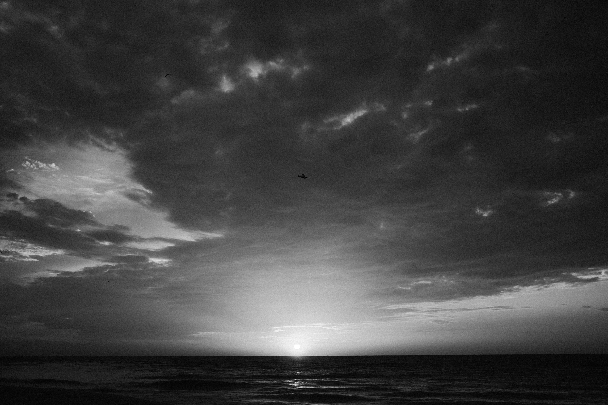
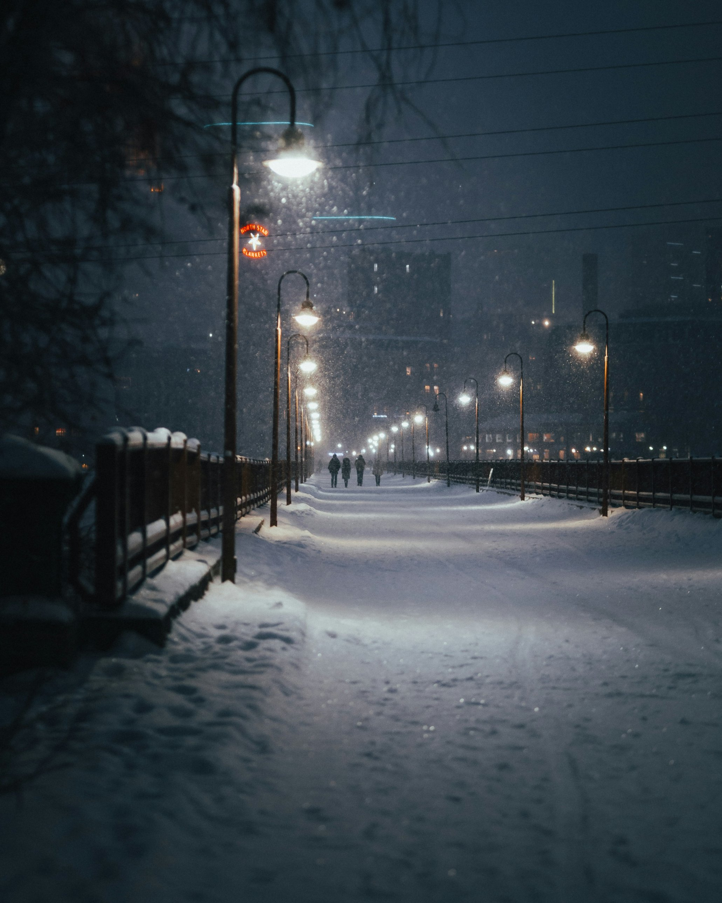
하늘
장소 시간 풍경에 따라 하늘을 보고 있는 사진의 베리에이션이 무수히 많다는 것을 조사하는 중에 느꼈다
내가 이전까지 작업한 모든 기록을 다시 볼 수 있게 하는 아카이브를 만들기 위해
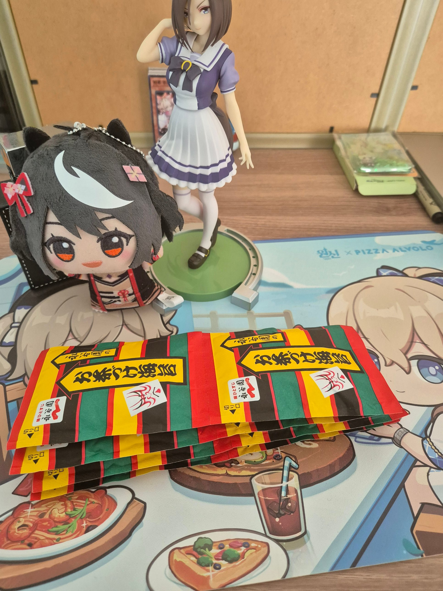
내 마음에 들어 선정한 사진들


장소 시간 풍경에 따라 하늘을 보고 있는 사진의 베리에이션이 무수히 많다는 것을 조사하는 중에 느꼈다
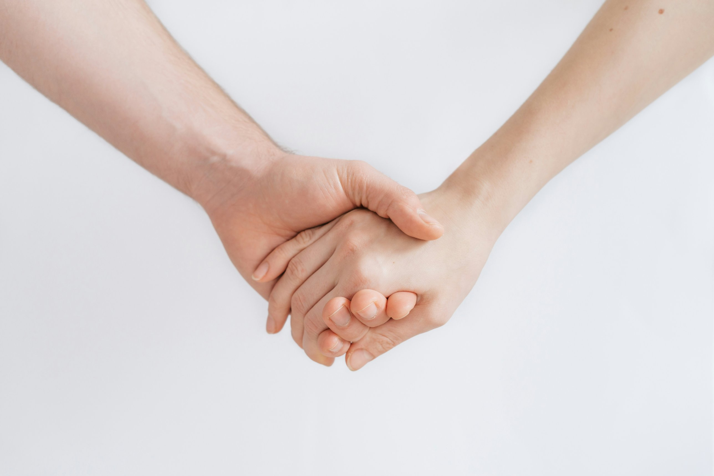
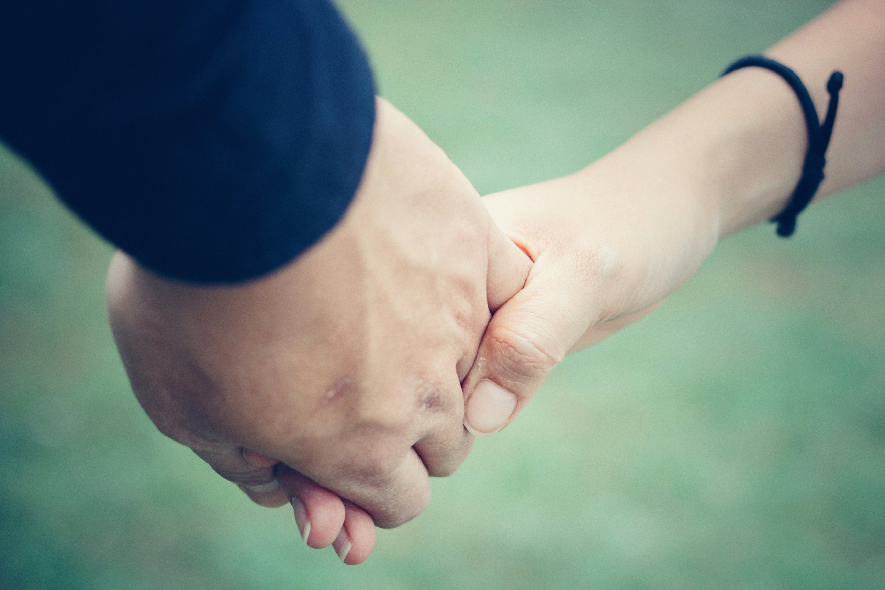
풍경 배경 체격에 따라 손을 맞 잡고 있는 사진의 관점을 다르게 볼 수 있다는 것이 색다르게 느껴졌다.
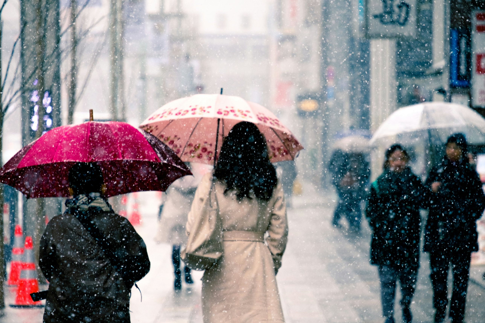
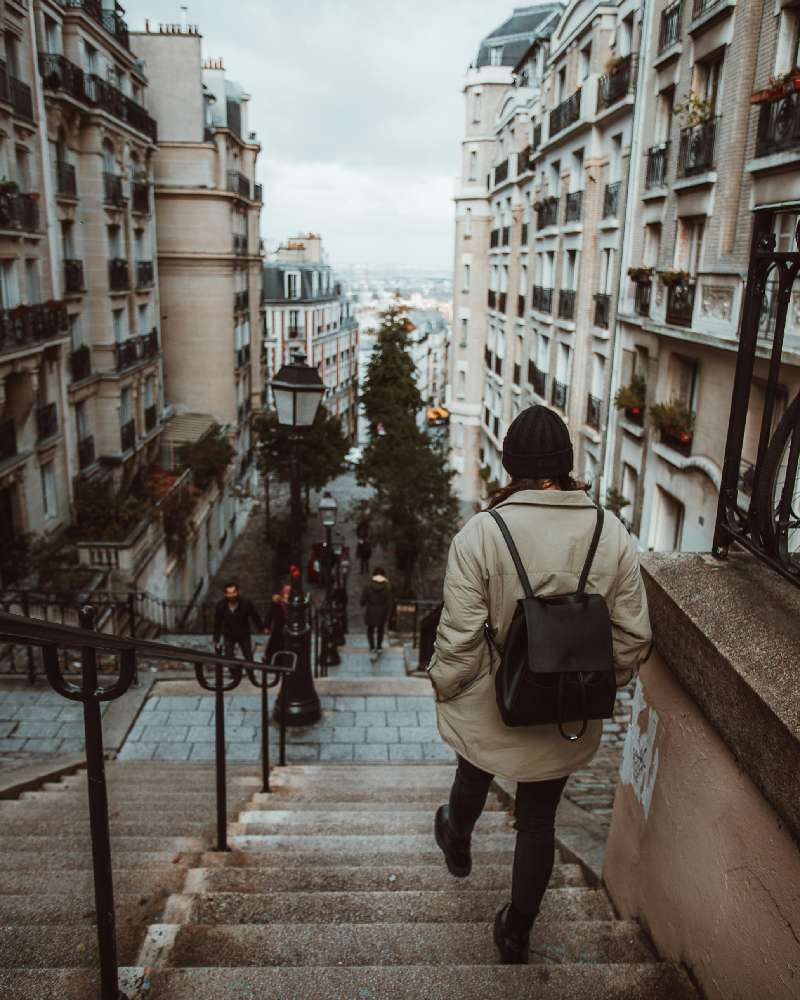
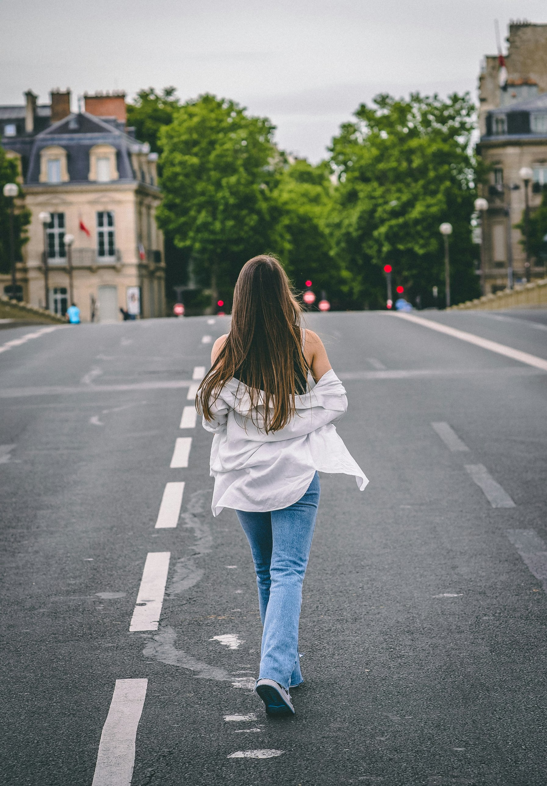
돌아가는 길이라도 시간 장소 공간에 따라 길이 전부 달라 보이는 효과가 있다
개인적,사람적으로 동경과 존경이 섞인 사람을 기준으로 골랐다.
내가 머물고 싶고,가장 안전하다고 생각한 공간으로 골랐다.
나만의 공간이기에 내가 어떤 뻘 짓을 해도 잠깐의 현타가 있을 뿐이고 그 누구도 나를 볼 수 없는 공간이기에 내 방이 좋다
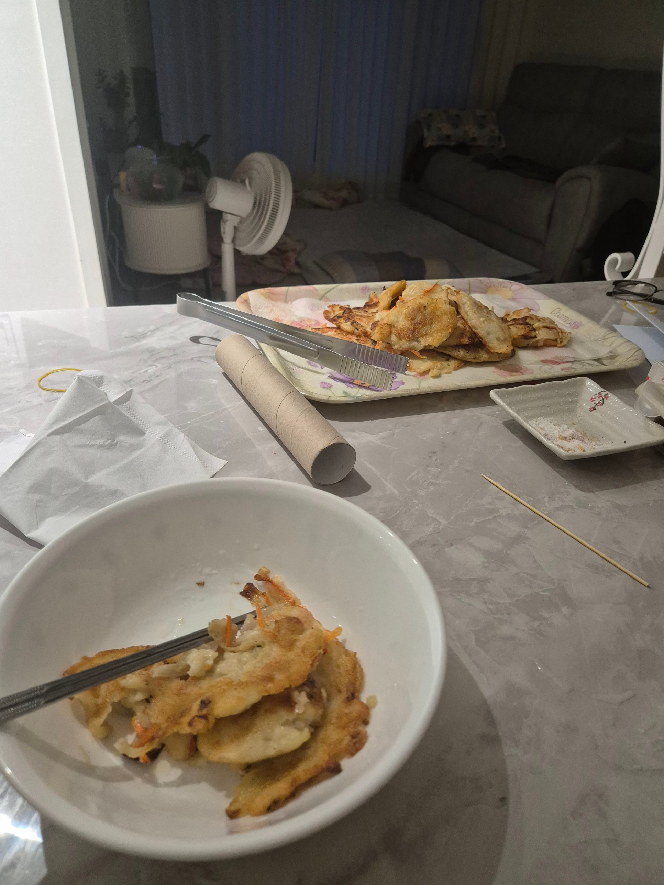
가족과 같이 밥을 먹고 가족과 같이 대화를 나눌 수 있는 공간이기에 내 집을 좋아한다
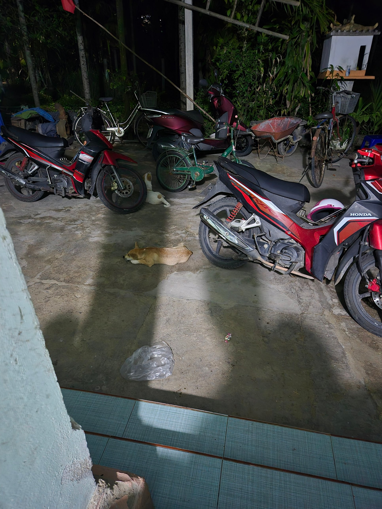
평소에는 어머니의 전화로만 볼 수 있었던 가족이기에 외갓집을 좋아한다
내가 애용하고 매일 고르는 물건들을 기준으로 골랐다.
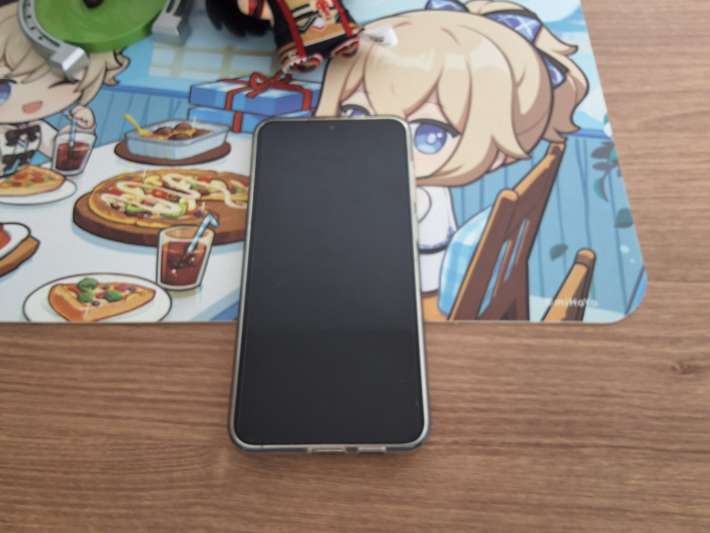
관찰: 나무 책상 위에 스마트폰이 놓여 있고, 뒤쪽에는 게임 캐릭터가 그려진 장패드와 피규어가 배치되어 있다. 이 사진은 스마트폰이 중앙에 위치하지만, 스마트폰을 크게 촬영해 주변 물건이 부분적으로 잘려 보이는 부분이 있다. 이 스마트폰을 좋아하는 이유는 내가 어디를 갈 때 든 무엇을 하려 할 때든 스마트폰으로 검색만 하면 전부 알려주니까 스마트폰이 좋다.
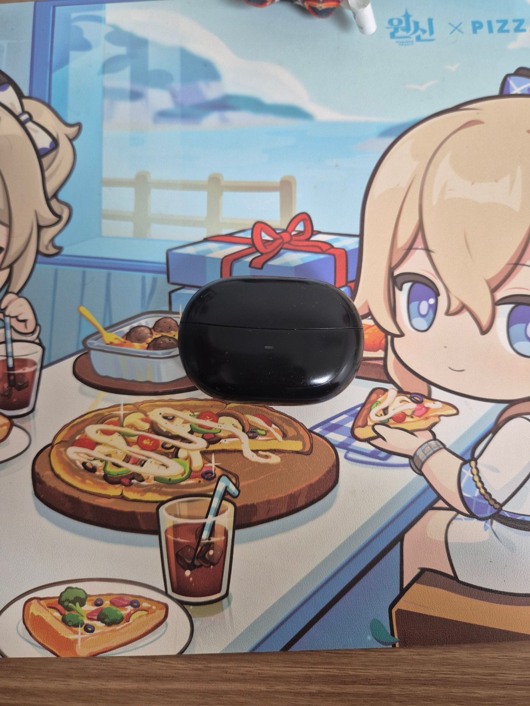
나무 책상 위에 검은색 무선 이어폰 케이스가 놓여 있고, 뒤쪽에는 게임 캐릭터가 그려진 장패드와 캐릭터 인형이 배치되어 있다. 두 사진 모두 이어폰 케이스가 중앙에 위치하지만, 첫 번째 사진은 케이스와 주변 그림을 크게 촬영해 일부 요소가 잘려 보이고, 두 번째 사진은 촬영 범위가 넓어 주변 캐릭터와 음식 그림까지 자세히 보인다. 전체적으로 이어폰 케이스의 검은색과 장패드의 파란색이 대비되며, 캐릭터의 밝은 색상과 음식 그림의 다양한 색상이 시선을 끈다. 이 이어폰을 좋아하는 이유는 4년동안 사용했는데도 별 문제 없이 구동이 되고, 실수로 몇 번 떨어뜨렸을 때도 고장이 나지 않으니 가장 효율성이 좋고 내 귀에도 잘 맞으니 이 블루투스 이어폰이 좋다.
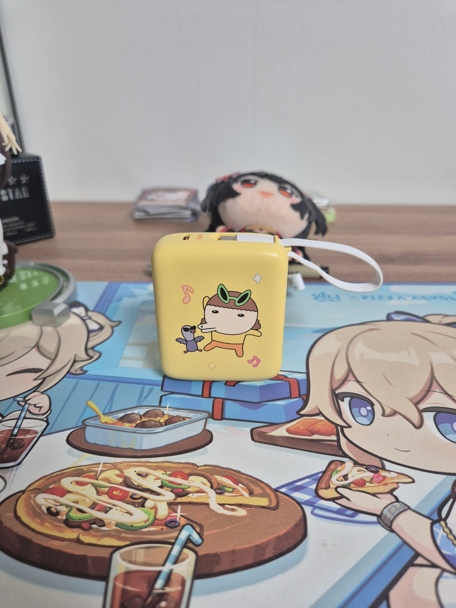
나무 책상 위에 노란색 휴대용 충전기가 놓여 있고, 뒤쪽에는 검은색 머리의 캐릭터 인형과 피규어가 배치되어 있다. 충전기에는 귀여운 캐릭터와 음악 기호가 그려져 있으며, 흰색 손잡이 끈이 옆으로 길게 이어져 있다. 첫 번째 사진은 위쪽에서 촬영해 충전기의 윗 면은 캐릭터 그림이 잘 보인다. 이 보조 배터리를 좋아하는 이유는 어디를 외출 할 때 그리고 등교하고 나서 스마트폰,블루투스 이어폰의 남은 배터리가 있거나 남은 배터리가 아예 없을 때 사용할 수 있어서 나는 이 보조 배터리가 마음에 든다.
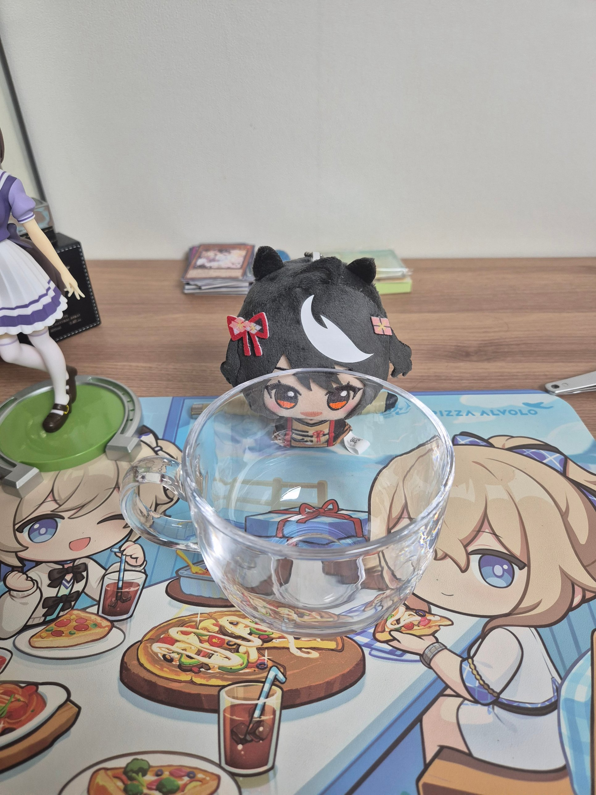
나무 책상 위에 투명한 유리컵이 놓여 있고, 컵 뒤쪽에는 검은색 머리의 캐릭터 인형과 피규어가 배치되어 있다. 바닥에는 파란색을 중심으로 음식과 게임 캐릭터가 그려진 장패드가 깔려 있다. 첫 번째 사진은 유리컵을 크게 촬영해 컵의 투명함과 표면의 반사가 강조되어있다., 컵을 좋아하는 이유는 내가 목이 마를 때 정말 너무 너무 마시고 싶을 때 컵을 사용해서 물을 마실 수 있기에 나는 이 컵을 좋아한다
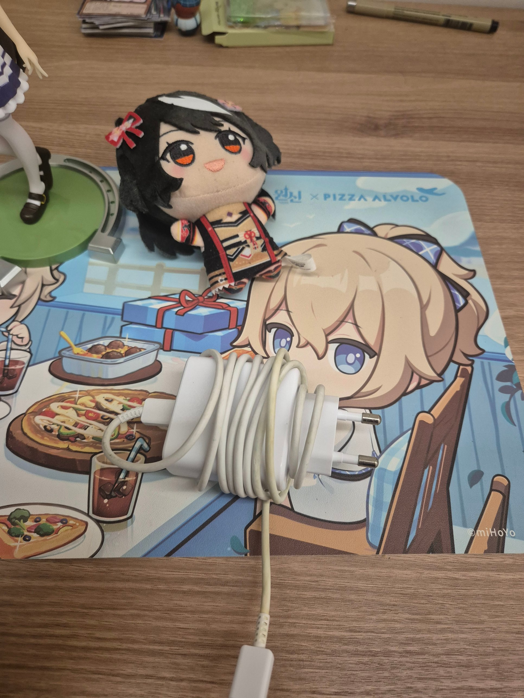
관찰: 나무 책상 위에 흰색 충전기와 케이블이 놓여 있고, 뒤쪽에는 게임 캐릭터 인형과 피규어가 배치되어 있다. 두 사진 모두 충전기가 중앙에 위치하지만, 첫 번째 사진은 낮은 시점에서 촬영해 충전기와 케이블이 앞으로 튀어나온 듯한 입체감이 강조된다. 이 충전기를 좋아하는 이유는 스마트폰의 배터리가 없을 때 사용하면 스마트폰을 충전해주기에 나는 이 충전기를 좋아한다
스마트폰의 좋아하는 점 - 검은 화면과 깔끔한 형태가 단정하고 세련된 느낌을 준다. 나무 책상의 갈색과 주변 캐릭터 소품의 다채로운 색상이 대비되어 스마트폰이 눈에 잘 들어온다. 일상에서 자주 사용하는 물건이라 친숙하고 실용적으로 느껴진다. 싫어하는 점 검은 화면이 꺼져 있어 다소 밋밋하고 생동감이 부족해 보인다. 주변의 캐릭터 소품과 마우스패드가 화려해 스마트폰 자체에 집중하기 어려울 수 있다. 화면에 빛이 반사되면 표면이 선명하게 보이지 않아 아쉽다.
돌아가는 길의 호불호의 이유도 적자면 밝고 자연스러운 색감과 적당한 여백이 있는 사진은 시각적으로 편안하고 안정적인 느낌을 주어 선호했다. 반면 어두운 색감이나 강한 명암 대비, 많은 요소가 한 화면에 배치된 사진은 무겁고 복잡하게 느껴져 상대적으로 선호도가 낮았다. 특히 사진의 중심 대상이 명확하고 주변이 단순할수록 편하게 감상할 수 있다는 점이 호불호에 영향을 주었다.
내 방을 좋아하는 이유는 내 취향대로 방을 꾸며 내 마음대로 쉴 수 있는 공간이기에 좋아하고 싫어하는 이유는 책상 위에 소품이 많이 놓여 있어 물건을 사용하거나 정리할 공간이 부족해 싫어한다